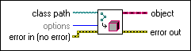

Get LV Class Default Value VI
Owning Palette: Cluster, Class, & Variant VIs and Functions
Requires: Base Development System
Returns the class data for the class whose path you wire to the class path input. If the class is not in memory, LabVIEW attempts to load it from disk. If any dependencies are missing, LabVIEW searches for the missing dependencies. If LabVIEW cannot find the dependency, LabVIEW assumes the dependency is missing and does not prompt the user to browse to the needed file.
Use this VI to dynamically create class objects, including class objects that are unknown at edit time.
Related Information
Creating a LabVIEW Class or Interface

 Add to the block diagram Add to the block diagram |
 Find on the palette Find on the palette |